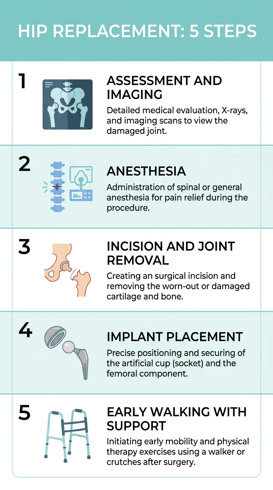

مفصل ران جایی است که سر استخوان ران داخل حفرهای در لگن میچرخد. وقتی غضروف این مفصل سایده شود، هر قدم برداشتن، نشستن و بلند شدن از صندلی دردناک میشود. اگر درمانهای غیرجراحی دیگر کمک نکنند، پزشک ممکن است تعویض مفصل ران را پیشنهاد کند. این عمل از جراحیهای رایج ارتوپدی است و هدفش کاهش درد و بازگرداندن حرکت به زندگی روزمره است. در این مقاله، ساده و دقیق توضیح میدهم این عمل چیست، چه مراحلی دارد و بیمار قبل و بعد از آن چه چیزی را باید بداند.
توضیحات این مقاله بر اساس راهنمای عمومی سرویس ملی بهداشت انگلستان و Mayo Clinic تنظیم شده است. تصمیم نهایی دربارهی عمل را جراح ارتوپدی شما پس از معاینه و تصویربرداری میگیرد.
در مفصل سالم، سطح استخوانها با غضروف صاف پوشیده شده و حرکت روی آن بدون اصطکاک انجام میشود. در آرتروز پیشرفتهی ران، این غضروف نازک یا کاملاً از بین میرود و استخوان به استخوان میسابد. در تعویض کامل مفصل ران، سر استخوان ران برداشته میشود و یک ساقهی فلزی داخل استخوان ران قرار میگیرد. سطح داخلی لگن هم با یک کاسهی مصنوعی جایگزین میشود. بین این دو قطعه، معمولاً یک سطح لغزنده از جنس پلاستیک یا سرامیک قرار دارد.
بیشتر بیماران پیش از عمل مدتی درمانهای دیگر را امتحان کردهاند، مثل فیزیوتراپی، کاهش وزن، تغییر فعالیت و داروهای ضد درد. وقتی درد با این روشها کنترل نشود و کیفیت زندگی بهشدت پایین بیاید، تصمیم برای عمل جدیتر گرفته میشود.
درد عمیق در کشالهی ران یا باسن، سفتی صبحگاهی، لنگیدن و محدودیت شدید در خم کردن ران از نشانههای شایع آرتروز ران هستند. پزشک با معاینه، بررسی سابقهی درد و تصویربرداری، میزان آسیب مفصل را ارزیابی میکند. گاهی آسیب ناشی از شکستگی یا بیماریهای التهابی است و این موضوع روی تصمیم درمان اثر دارد.
روش عمل بر اساس سن، وزن، فعالیت روزانه و شکل آسیب انتخاب میشود. بعضی جراحان مسیر ورود به مفصل را از جلو یا از پشت انتخاب میکنند. هر کدام مزایا و محدودیتهای خودشان را دارند. مهم این است که جراح مسیر را با شما در میان بگذارد و دلیل انتخابش را توضیح دهد.
دربارهی طول عمر مفصل مصنوعی هم باید واقعبین بود. بسیاری از مفصلهای ران سالها دوام میآورند، اما این مدت به وزن بدن، میزان فعالیت، نوع ایمپلنت و کیفیت اجرای عمل بستگی دارد. به همین دلیل پزشک معمولاً ویزیتهای پیگیری را تعیین میکند تا وضعیت مفصل با تصویربرداری بررسی شود. اگر در سالهای بعد صدای غیرعادی، لنگیدن یا درد تازهای ایجاد شد، همان موقع به پزشک خبر دهید.
پیش از عمل، تیم درمان سلامت عمومی شما را بررسی میکند و آزمایشهای لازم را میگیرد. در روز عمل، بیهوشی انجام میشود. بیهوشی نخاعی یا عمومی هر کدام کاربرد خودش را دارد و آنستزیولوژیست آن را با شما هماهنگ میکند. سپس جراح با برشی روی ران، به مفصل دسترسی پیدا میکند، سر استخوان و بافت آسیبدیده را برمیدارد، کاسهی لگن را آماده میکند و قطعههای مصنوعی را با دقت قرار میدهد. در پایان، زخم بسته و معمولاً یک پانسمان ساده گذاشته میشود.
اینفوگرافی زیر، پنج مرحلهی اصلی این مسیر را خلاصه میکند:

بیشتر بیماران همان روز یا روز بعد از عمل سعی میکنند با کمک فیزیوتراپیست بلند شوند و چند قدم بردارند. این کار خطر لخته شدن خون در پا را کم میکند و به برگشت حرکت کمک میکند. درد در روزهای اول معمولاً با داروهای خوراکی کنترل میشود و تیم درمان میزان آن را هر چند ساعت یکبار بررسی میکند. اگر درد شدید بود یا خواب را مختل میکرد، آن را به پرستار بگویید.
در هفتههای اول، رعایت چند نکتهی ساده مهم است. زاویهی ران نسبت به بدن را در بعضی حرکتها محدود نگه دارید، تا زمانی که جراح توصیه کرده است. هنگام نشستن از صندلی بلند استفاده کنید و از نشستن روی مبلهای خیلی نرم خودداری کنید. تمرینهای فیزیوتراپی را هر روز انجام دهید، چون بیشترین پیشرفت در این دوره با تمرین منظم به دست میآید. اگر خانه پله دارد، پیش از عمل برای بالا رفتن از پله برنامهریزی کنید. همچنین مقالهی راه رفتن زودهنگام بعد از عمل را بخوانید تا با روند معمول آشنا شوید.
مثل هر عمل بزرگ، تعویض مفصل ران هم خطراتی دارد. لخته شدن خون در پا و ریه، عفونت محل برش، دررفتگی مفصل جدید و ایجاد اختلاف طول دو پا از عوارض شناختهشده هستند. بیشتر این عوارض با پیشگیری و پیگیری بهموقع قابل کنترلاند. برای نمونه، جزئیات پیشگیری از لخته شدن خون در این مقاله توضیح داده شده است. مراقبت از زخم و نشانههای عفونت را هم در مقالهی عفونت محل عمل ببینید.
بیشتر بیماران در ماههای اول بهتدریج درد کمتری احساس میکنند، اما بعضی تورم، گرما یا تب را دیرتر تجربه میکنند. اگر با وجود تمرین و استراحت درد شبها بیشتر شد، یا پای عملشده ناگهان سنگین و متورم شد، همان روز با تیم درمان تماس بگیرید. این علامتها را بعد از عمل در علائم هشدار بعد از عمل جدا کردهایم.
زمان بازگشت به کار به نوع شغل بستگی دارد. کارهای نشسته معمولاً زودتر از کارهای سنگین ممکن میشوند. رانندگی را فقط بعد از اجازهی جراح و زمانی شروع کنید که بتوانید پا را بدون درد کنترل کنید. ورزشهای کمضربه مثل شنا، دوچرخهسواری و پیادهروی با نظر پزشک مجاز میشوند. ورزشهای پرضربه معمولاً توصیه نمیشوند، چون ممکن است عمر مفصل مصنوعی را کوتاه کنند.
پرسیدن سؤال درست کمک میکند تصمیم آگاهانهتری بگیرید. بپرسید چه مدتی انتظار میرود درد کاهش یابد، انتظار واقعبینانه از حرکت بعد از عمل چیست، و در صورت تشدید درد یا تورم چه کسی باید مراجعه شود. همچنین بپرسید عمر مفصل مصنوعی چقدر است و در آینده چه نگهداریای لازم دارد. اگر فهرست بلندی از سؤال دارید، بنویسید و در ویزیت مطرح کنید.
آیا تعویض مفصل ران درد را کاملاً از بین میبرد؟
بیشتر بیماران درد را بهطور چشمگیری کاهش میدهند، اما بهبودی کامل و درد خفیف گاهی باقی میماند. پزشک نتیجهی احتمالی را با شرایط شما توضیح میدهد.
چه مدت بعد از عمل میتوانم راه بروم؟
معمولاً از روزهای اول با کمک واکر یا عصا راه رفتن شروع میشود. سرعت بهبودی برای هر فرد متفاوت است.
آیا بعد از تعویض ران میتوانم شنا یا دوچرخهسواری کنم؟
بعضی ورزشهای کمضربه مثل شنا و دوچرخهسواری با نظر پزشک مجاز میشوند. ورزشهای پرضربه معمولاً توصیه نمیشوند.
آیا بعد از عمل باید به پزشک سر بزنم؟
بله، ویزیتهای پیگیری برای بررسی حرکت، زخم و وضعیت مفصل لازم است. پرسشهای خود را از پیش یادداشت کنید و در ویزیت مطرح کنید.